A história da Matemática pode ser comparada ao ritual da tocha olímpica, em que cada geração passa para a seguinte o fogo do conhecimento dos números e as relações que estes guardam entre si. Assim, cada estudante que se dedica ao estudo da Matemática recebe uma herança dos grandes estudiosos de tempos passados e, então, passa a se conectar com todos eles nesse campo do saber.
Na Itália, por volta do século V a.C., os pitagóricos (como eram chamados os discípulos de Pitágoras) foram capazes de provar uma importante relação entre as medidas dos lados de um triângulo retângulo. Essa descoberta, conhecida como teorema de Pitágoras, traz aplicações práticas nas mais diversas áreas da Engenharia e da Física e também na Arquitetura, nas Artes e na Astronomia.
A partir das contribuições matemáticas dos pitagóricos e das grandes civilizações pré-helênicas, como a egípcia e a babilônica, foi possível desenvolver o estudo acerca das relações entre as medidas dos lados e dos ângulos de qualquer tipo de triângulo. Tais descobertas culminaram no surgimento de uma das mais importantes áreas da Matemática: a Trigonometria.
- Como podemos relacionar as medidas dos lados e dos ângulos de um triângulo retângulo?
- É possível adaptar o teorema de Pitágoras nos triângulos que não apresentam ângulos retos?
Neste capítulo será abordada a habilidade EM13MAT308.
O teorema de Pitágoras
Esse teorema é, provavelmente, a mais conhecida de todas as fórmulas matemáticas. Muito embora seu nome esteja associado ao famoso filósofo e matemático grego Pitágoras (570 a.C-495 a.C), há fortes indícios de que o resultado do teorema já era conhecido antes disso pelos povos babilônios.
O enunciado do teorema de Pitágoras é bastante simples:
O quadrado da hipotenusa de um triângulo retângulo é igual à soma dos quadrados de seus catetos.Observando a figura a seguir, é possível perceber que o teorema de Pitágoras relaciona os lados do triângulo retângulo através da equação:
 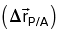
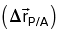
Esse teorema foi provado no capítulo 4, o qual é destinado às relações métricas nos triângulos retângulos.
O legado de Pitágoras.
Aplicando o teorema de Pitágoras, é comum que surjam equações que envolvam raízes quadradas. É útil a lembrança da seguinte propriedade:Dados a e b reais positivos, então  .Desse modo, é possível simplificar expressões como as seguintes:
.Desse modo, é possível simplificar expressões como as seguintes:


Na álgebra, aprendemos que o quadrado de uma soma pode ser desenvolvido como:

Enquanto o quadrado de uma diferença é dado por:
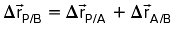As questões resolvidas a seguir demonstram diferentes situações em que o teorema de Pitágoras pode ser aplicado.
1
A figura a seguir representa uma escada de 5 metros de comprimento que está apoiada em uma parede, enquanto sua base está posicionada a 3 metros de distância dessa mesma parede. Determine a altura h do topo da escada em relação ao chão.
Resolução:
Note o triângulo retângulo em destaque, de hipotenusa 5 metros. Pelo teorema de Pitágoras, é possível estabelecer a equação:
h2
Assim, a altura alcançada pela escada em relação ao chão é de 4 metros.
2
Para cada uma das figuras a seguir, determine as medidas descritas pelas variáveis apontadas.


Resolução:
-
No ABC, temos:
y2
= 122+ 52 ⇒ y2= 169 ⇒ y = −13 (não serve) ou y= 13No ABD, temos:
152 = 122
+ ( 5 + x)2 ⇒ (5+ x)2 = 81 ⇒ y = −14 (não serve) ou x= 4 -
No ABC, temos:

Tomando a raiz positiva da equação de 2o grau apresentada anteriormente, temos que x
= 3. -
No ABD, temos:

No ABC, temos:
No ADC, temos:
Substituindo (II) em (I), obtemos:
Retornando à expressão (2), encontramos:
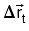

3
Um pássaro está no topo de um pinheiro de 15 metros de altura, enquanto outro pássaro está no topo de um segundo pinheiro, este de 10 metros de altura e a uma distância de 25 metros do primeiro. Uma presa que está no chão, situada no segmento de reta que une os dois pinheiros, é avistada simultaneamente pelos dois pássaros, os quais partem, ao mesmo tempo, em direção a ela. Sabendo que os pássaros desenvolvem a mesma velocidade e que chegam no mesmo instante à presa, determine a distância entre o pinheiro menor e a presa.
Resolução:
Observe que, como os pássaros possuem a mesma velocidade e chegam simultaneamente à presa, então a distância percorrida por eles até o alvo é igual. Seja d esta distância, a situação pode ser esquematizada na figura a seguir:

Aplicando o teorema de Pitágoras nos dois triângulos retângulos, obtemos:
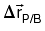Igualando as equações, temos:
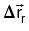Assim, a distância da presa ao menor dos pinheiros é de 15 metros.
É interessante saber que o inverso do teorema de Pitágoras também é verdadeiro:
Se o quadrado de um lado de um triângulo é igual à soma dos quadrados dos dois outros, então o triângulo é retângulo.Tal resultado é útil para provar, eventualmente, que dois segmentos são perpendiculares entre si.
Relações trigonométricas no triângulo retângulo
A palavra “trigonometria” é de origem grega e significa medidas do triângulo. A Trigonometria, porém, não se limita apenas às situações em que triângulos estão presentes, mas possui aplicações em diversas áreas do conhecimento, como Astronomia, Física, Arquitetura e Engenharia.
Neste capítulo, nos limitaremos às relações trigonométricas mais simples em triângulos, em especial no triângulo retângulo.
Seno, cosseno e tangente
Em um triângulo retângulo, definimos uma razão trigonométrica como sendo a razão entre as medidas de dois de seus lados. Ela será bastante útil para cálculos que envolvam as medidas de lados e de ângulos de qualquer triângulo retângulo.
Neste capítulo, estudaremos três razões trigonométricas: seno, cosseno e tangente.
Primeiramente, considere um triângulo ABC, retângulo em A, tal que um de seus ângulos agudos é denotado por θ, conforme a figura a seguir:
Note que um dos catetos do triângulo está em oposição ao ângulo θ. Dessa forma, em relação ao ângulo θ, este cateto é chamado de cateto oposto, enquanto o segundo cateto é conhecido como cateto adjacente.
Com base nessa figura, é possível definirmos as seguintes razões trigonométricas:
Seno de α

Cosseno de α
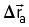Tangente de α

Antes de explorar as relações métricas em um triângulo retângulo, é necessário conhecer o conceito de projeção ortogonal de um segmento sobre uma reta, que, de modo geral, é o pé da perpendicular, traçado do ponto à reta. Por exemplo, na figura a seguir, o ponto P' é a projeção do ponto P sobre a reta r.

Já a de um segmento sobre uma reta é a projeção de todos os pontos constituintes dele. Na situação a seguir, o segmento 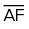 é a projeção do 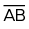 sobre a reta s.
Outros tipos de projeção também são possíveis. Por exemplo, você pode pensar em sua sombra como a projeção do seu corpo no chão, já que os raios de luz solar são praticamente paralelos entre si, devido à grande distância entre o Sol e a Terra.
A sombra de uma pessoa é uma projeção de seu corpo sobre o solo.
Zenza Flarini/Shutterstock.com
De posse desse novo conceito, seguiremos os nossos estudos sobre triângulos retângulos.
Elementos de um triângulo retângulo
Seja dado um triângulo ABC, retângulo no vértice A. Nesse triângulo, traçamos o
segmento de reta 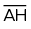 perpendicular à hipotenusa 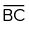 de modo que o ponto H pertença ao lado  do triângulo. A figura a seguir ilustra a situação.
do triângulo. A figura a seguir ilustra a situação.
Pela figura, podemos destacar os seguintes elementos:
- BC
= a= medida da hipotenusa do triângulo ABC;
do triângulo ABC;
- AC
= b= medida do cateto 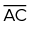 do triângulo ABC; - AB
= c= medida do cateto do triângulo ABC;
do triângulo ABC;
- BH
= m= medida da projeção do cateto sobre a hipotenusa;
sobre a hipotenusa;
- CH
= n= medida da projeção do cateto sobre a hipotenusa;
sobre a hipotenusa;
- AH
= h= medida da altura relativa à hipotenusa.
relativa à hipotenusa.
Note que, nessa situação, há três triângulos retângulos. São eles: ΔABC, ΔAHB e ΔAHC. Passaremos a considerar as relações entre as medidas dos lados desses três triângulos. Para isso, recorreremos às relações de semelhança de triângulos, estudadas no capítulo anterior.
Relações métricas no triângulo retângulo
Considere o triângulo ABC, retângulo em A. Ao traçarmos a altura 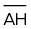 relativa à hipotenusa, nós o dividimos em dois novos triângulos retângulos: ΔAHB e ΔAHC. Ao observá-los, é possível perceber que todos os triângulos dessa figura são semelhantes entre si.
Perceba que os ângulos são complementares ao ângulo 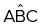 , portanto possuem a mesma medida. De modo semelhante, os ângulos 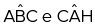 são complementares ao ângulo , de modo que também são congruentes entre si.
Logo, analisando separadamente os triângulos, temos a seguinte situação:
Visto que todos os três triângulos possuem ângulos congruentes entre si, temos:
ΔABC ∼ ΔHBA ∼ ΔHACDessa semelhança, podemos tirar uma grande variedade de relações, que serão explanadas a seguir.
Relação 1
O produto das medidas dos catetos é igual ao produto da medida da hipotenusa pela altura relativa a ela.
ΔABC ∼ ΔHBA: 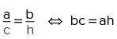
Relação 2
O quadrado da medida de um cateto é igual ao produto entre a medida da sua projeção na hipotenusa e a própria hipotenusa.
ΔABC ∼ ΔHAC: 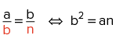
ΔABC ∼ ΔHBA: 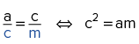
Relação 3
O quadrado da medida da altura relativa à hipotenusa é igual ao produto entre as medidas das projeções dos catetos sobre a hipotenusa.
ΔHBA ∼ ΔHAC: 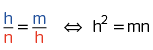
Relação 4
O produto da medida de um cateto pela altura relativa à hipotenusa é igual ao produto entre a medida do outro cateto pela projeção do primeiro sobre a hipotenusa.
ΔABC ∼ ΔHAC: 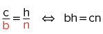
ΔABC ∼ ΔHBA: 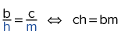
1
Um barco, inicialmente posicionado no ponto B do oceano, deseja fazer uma
viagem até o ponto C, a20 km de distância. O capitão do navio sabe que no ponto A, a 16 km da posição
inicial, existe uma ilha e que o ângulo BÂC mede90°. Com base nessas informações e sabendo que
o barco seguirá em linha reta pela trajetória
 , determine:
, determine:
- a menor distância entre o barco e a ilha durante toda a viagem.
- a distância que o barco deve percorrer a partir do ponto B até chegar ao ponto mais próximo da ilha.
Resolução:
-
Seja D o ponto do segmento 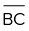 mais próximo do vértice A, o ângulo medirá 90°. Desse modo:
Note que é a altura relativa à hipotenusa. Assim, pelas relações métricas no triângulo retângulo:
20 ⋅ AD
= 16 ⋅ 12~ 20 ⋅ AD= 192~ AD= 9,6 kmPortanto, a menor distância entre o barco e a ilha durante toda a viagem é de 9,6 km.
-
Observe que 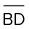 , distância percorrida do ponto B ao ponto mais próximo da ilha, é a projeção do cateto 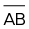 sobre a hipotenusa. Assim:
20 ⋅ BD
= 16²~ 20 ⋅ BD= 256~ BD= 12,8 kmDe modo que a distância que o barco deve percorrer a partir do ponto B para chegar ao ponto mais próximo da ilha é de 12,8 km.
2
As projeções dos catetos de um triângulo retângulo sobre a sua hipotenusa diferem em 5 cm, enquanto a altura relativa à hipotenusa mede 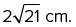 Determine a medida da hipotenusa desse triângulo.
Resolução:
Seja x a medida da menor projeção de um cateto sobre a hipotenusa desse triângulo, como ilustra a figura a seguir:
Utilizando a relação métrica que relaciona o quadrado da altura relativa à hipotenusa com as medidas das projeções dos catetos, temos:
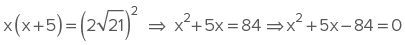Da equação, temos que x
Assim, a medida da hipotenusa
é de AB
Teorema de Pitágoras
Anteriormente, estudamos o teorema de Pitágoras, a relação métrica mais importante em um triângulo retângulo. No entanto, a prova desse teorema será abordada neste capítulo.
Considere um triângulo retângulo ABC, de hipotenusa
 e projeções dos catetos sobre a hipotenusa medindo m e n, conforme representado a seguir.
e projeções dos catetos sobre a hipotenusa medindo m e n, conforme representado a seguir.
Das relações demonstradas anteriormente, temos que:
b²Adicionando essas duas equações: b²
Note que podemos colocar o termo a em evidência, no lado direito da equação:
b²
Anteriormente, estudamos o teorema de Pitágoras, a relação métrica mais importante em um triângulo retângulo. No entanto, a prova desse teorema será abordada neste capítulo.
Considere um triângulo retângulo ABC, de hipotenusa
e projeções dos catetos sobre a hipotenusa medindo m e n, conforme representado a seguir.
Das relações demonstradas anteriormente, temos que:
b²Adicionando essas duas equações: b²
Note que podemos colocar o termo a em evidência, no lado direito da equação:
b²
4
Dado o triângulo retângulo a seguir, determine os valores de sen α, cos α e tg α.

Resolução:
Em primeiro lugar, é necessário calcular o comprimento da hipotenusa. Seja x a medida da hipotenusa, por Pitágoras, temos:

Assim, pelas definições dadas, encontramos:
5
Dada a figura a seguir, em que BM

- a medida x;
- o valor de cos α.
Resolução:
-
No ABC:
No MNC:

Igualando as expressões, obtemos:
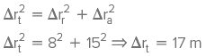 -
No MNC, temos:
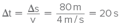
6
A linha de visão de uma criança para que ela enxergue o topo de um pinheiro é de 37° em relação ao chão. Considerando desprezível a altura da criança e sabendo que ela está a 48 metros de distância da árvore em questão, determine a altura h do pinheiro. Utilize a relação tg 37°

Resolução:
Por meio da relação tangente no triângulo retângulo dado, temos:
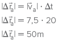Assim, a altura do pinheiro é de 36 metros.
7
Um jato decola fazendo um ângulo de 23° com o solo. Determine a altura atingida pelo jato e seu deslocamento horizontal ainda durante o processo de decolagem, sabendo que ele já percorreu uma distância de 5 000 m através do ar. Caso necessário, utilize as aproximações: sen 23° ≅ 0,39 e cos 23° ≅ 0,92.
Resolução:
Seja
Para o cálculo da distância percorrida horizontalmente, é possível usar a relação cosseno, conforme mostrado a seguir:


Assim, a altura atingida pelo jato é de 1 950 metros, e seu deslocamento horizontal é de 4 600 metros.
É importante notar que, em cada ângulo agudo, estão associados valores distintos para cada uma das três funções trigonométricas ensinadas. Dentre todos os ângulos agudos, três são muito importantes e requerem atenção especial: 30°, 45° e 60°.
Os valores para seno, cosseno e tangente de cada um desses ângulos estão representados na tabela a seguir. Mais à frente, será mostrado como é possível chegar a cada um desses resultados a partir de figuras geométricas simples.
| Razões trigonométricas dos ângulos notáveis | |||
|---|---|---|---|
| 30° | 45° | 60° | |
| seno | 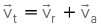 | ||
| cosseno |  |
||
| tangente |  |
1 |  |
O triângulo 45°, 45° e 90°
Vejamos o seguinte teorema:Em qualquer triângulo retângulo de ângulos 45°, 45° e 90°, a hipotenusa mede  vezes o comprimento de qualquer de seus catetos.A prova é simples. Vejamos um triângulo retângulo ABC, em que med (B)
vezes o comprimento de qualquer de seus catetos.A prova é simples. Vejamos um triângulo retângulo ABC, em que med (B)

É importante notar que, como o triângulo ABC possui dois ângulos de mesma medida, então ele é isósceles, de modo que AB


Com o auxílio da equação apresentada, é possível calcular a medida de um ângulo qualquer do triângulo, desde que se tenha a medida dos outros dois ângulos.A medida da hipotenusa é calculada pelo teorema de Pitágoras:

Desse modo, a medida da hipotenusa é  vezes a medida de qualquer um dos catetos.Com isso, observamos que, a partir da figura apresentada, é possível calcular as razões trigonométricas para 45°:
vezes a medida de qualquer um dos catetos.Com isso, observamos que, a partir da figura apresentada, é possível calcular as razões trigonométricas para 45°:

O triângulo 30°, 60° e 90°
Para este caso, o enunciado do teorema é:Em qualquer triângulo retângulo de ângulos 30°, 60° e 90°, a hipotenusa mede o dobro do menor cateto, e o maior cateto mede  vezes o menor.Para a prova deste teorema, vejamos os triângulos retângulos ABC e ACD, em que BC
vezes o menor.Para a prova deste teorema, vejamos os triângulos retângulos ABC e ACD, em que BC

O triângulo ABD é equilátero, portanto AB

Desse modo, observamos que, no triângulo de ângulos com medidas 30°, 60° e 90°, as medidas de seus lados são dadas por  .Além disso, a partir do BAC, verificamos as relações trigonométricas para 30° e 60°:
.Além disso, a partir do BAC, verificamos as relações trigonométricas para 30° e 60°:

8
Utilizando as relações trigonométricas fundamentais, determine os valores das medidas desconhecidas da figura a seguir.

Resolução:
ABC:


ABD:


9
Uma pessoa posicionada na janela A de um prédio, situada 12 metros acima do nível da rua, enxerga o prédio vizinho. O desenho a seguir esquematiza a situação. O segmento  é paralelo ao solo, e do ponto A é possível enxergar os pontos B e C, de acordo com os ângulos indicados.
é paralelo ao solo, e do ponto A é possível enxergar os pontos B e C, de acordo com os ângulos indicados.
A partir dos dados da figura, determine:
- A distância entre os prédios.
- A altura do prédio da direita.
Resolução:
-
Note que a distância entre os prédios é dada pelo segmento AD. No triângulo ADC, temos:

Assim, a distância entre os prédios é de

-
No triângulo ADB:

De modo que a altura h do prédio é dada por:

10
Dado o triângulo equilátero ABC de lado 5 cm, toma-se o ponto D no lado BC tal que BD
Resolução:
Para o cálculo da tangente de β, é útil a elaboração de um triângulo retângulo. Para isso, traçaremos a altura do BDA relativa ao lado AB, conforme mostra a figura:


Como o BHD é retângulo, temos:

No AHD, encontramos:


Relações trigonométricas em quaisquer triângulos
Muito embora o teorema de Pitágoras seja extremamente útil, suas aplicações estão, a princípio, limitadas apenas a triângulos retângulos. Para quaisquer outros casos de triângulos, há a necessidade de se estabelecer relações matemáticas entre seus lados e ângulos. Com o auxílio da Trigonometria, é possível compreender duas importantes relações válidas para todos os tipos de triângulos: a lei dos cossenos e a lei dos senos.
Ambas as leis estabelecem relações matemáticas simples entre as medidas numéricas dos lados e dos ângulos internos de um triângulo. Vamos analisar cada uma delas.
A lei dos cossenos
A lei dos cossenos é uma espécie de generalização do teorema de Pitágoras, aplicável em qualquer tipo de triângulo. Observe o enunciado da lei:
Dado um triângulo ABC de qualquer tipo, conforme a figura a seguir, são válidas as relações:

a2
A prova da lei dos cossenos não é difícil. Imagine um triângulo acutângulo ABC, conforme a figura a seguir. Traçando a altura relativa à base AB, é possível dividi-lo em dois triângulos retângulos. Observe:

Aplicando o teorema de Pitágoras em ambos os triângulos retângulos, temos:

Subtraindo as duas equações, encontramos:

Das relações trigonométricas nos triângulos retângulos, temos:

Substituindo este resultado em (I), chega-se ao resultado desejado:
a2
Apresentamos a seguir algumas questões que ilustram situações típicas em que a lei dos cossenos é útil na resolução de problemas.
Apresentamos a seguir algumas questões que ilustram situações típicas em que a lei dos cossenos é útil na resolução de problemas.
11
Três barracas estão dispostas em pontos diferentes de um parque, conforme esquematizado na figura. As barracas estão equipadas com rádios de comunicação cujo alcance é de 1 500 metros. A partir das informações presentes na imagem, determine se as barracas A e B conseguem se comunicar diretamente entre si através do sistema de rádio.

Resolução:
Seja d a distância entre as barracas A e B. Pela lei dos cossenos, é possível montar a seguinte equação:
d2
d2
Assim, como a distância entre as barracas A e B é de 1 400 metros, é possível estabelecer contato através do rádio de comunicação.
12
Um barco motorizado parte de um cais no ponto A em direção a uma pequena ilha localizada a 70 km de distância, no ponto B. Por causa de uma tempestade, logo na partida, o barco é obrigado a desviar sua rota original em ângulo de 82°. Após duas horas de navegação, o barco, já no ponto C, finalmente consegue estabelecer uma rota direta em relação à ilha. Sabendo que a velocidade do barco é constante de 25 km/h, utilizando a figura como auxílio e a aproximação  , determine:
, determine:
- a distância d entre o barco e a ilha no instante da mudança de rota;
- o ângulo θ que o barco deve desviar para que tome a rota correta no ponto C;
- o tempo a mais gasto na viagem por causa da tempestade.

Resolução:
-
Entre A e C, o barco navegou durante duas horas. Assim, como a velocidade do barco é de 25 km/h, então AC
= 50 km.Utilizando a lei dos cossenos no triângulo ABC, temos: d2 = 502 + 702 − 2 ⋅ 50 ⋅ 70 ⋅ cos 82°
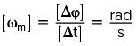d2 = 6 400 ⇒ d = 80 km
Assim, a distância entre a ilha e o ponto C é de 80 km.
-
É possível calcular o ângulo Ĉ do triângulo usando a lei dos cossenos:
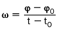

Desse modo, como o ângulo θ é suplementar do ângulo Ĉ:
θ = 180° − 60° = 120°
-
O percurso, sem a tempestade, seria AB
= 70 km.Com a tempestade, o percurso foi de AC
+ BC= 50 km+ 80 km= 130 km. Assim, percorreu-se uma distância de 60 km a mais em virtude da tempestade.Como a velocidade do barco é de 25 km/h, o tempo total
t gasto foi de: 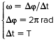 2 horas e 24 minutos.
A lei dos senos
Enquanto a lei dos cossenos fornece relações entre as medidas dos lados de um triângulo e o cosseno de um de seus ângulos, a lei dos senos relaciona as medidas dos lados e dos senos dos ângulos internos de um triângulo, conforme o enunciado a seguir:
Dado um triângulo ABC qualquer, de lados a, b, c e ângulos opostos A, B, C, respectivamente, temos que:

Em outras palavras, as medidas dos lados de um triângulo são proporcionais aos senos de seus ângulos opostos.Vamos provar a lei dos senos para o caso de triângulos acutângulos. Observe o triângulo ABC a seguir, em que estão traçadas as alturas h1 e h2, relativas aos lados AB e AC respectivamente.Aplicando as relações trigonométricas conhecidas nos triângulos retângulos da figura, temos:
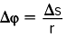 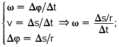Assim:

De modo semelhante, temos:

Portanto:

Por fim, de (I) e (II), obtemos:
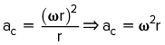Observe que a lei dos senos pode ser utilizada para o cálculo não só das medidas dos lados de um triângulo, mas também das medidas de seus ângulos. No geral, para a solução de problemas, a lei dos senos é utilizada nas ocasiões em que, dado um triângulo, se dispõem de:
- Caso 1: dois de seus ângulos e um de seus lados.
- Caso 2: dois de seus lados e o ângulo oposto a um desses lados.
Acompanhe os exercícios do boxe “Questões resolvidas” que tratam de cada uma dessas duas situações.
13
Um helicóptero, sobrevoando uma região, é avistado por dois observadores B e C que estão a uma distância de  metros entre si. No momento da observação, o helicóptero está sobre a linha que une os dois observadores e é visto pelo observador B através um ângulo de 75° em relação ao chão e pelo observador C por um ângulo de 45°.
metros entre si. No momento da observação, o helicóptero está sobre a linha que une os dois observadores e é visto pelo observador B através um ângulo de 75° em relação ao chão e pelo observador C por um ângulo de 45°.

Determine:
- A distância do observador B ao helicóptero.
- A altura aproximada do helicóptero (utilize a aproximação sen 75°
= = 0,96).
Resolução:
-
Como a soma das medidas dos ângulos internos de um triângulo é de 180°, a medida do ângulo  é dada por:
med(A^)
= 180° − 75° − 45° ⇒ med(A^)= 60°Pela lei dos senos, temos:

Assim, a distância do observador B em relação ao helicóptero é de 400 metros.
-
Atualizando a figura com as informações calculadas e traçando a altura h do helicóptero, temos:
Utilizando as relações trigonométricas no triângulo retângulo da esquerda, obtemos:
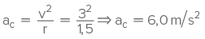Portanto, a altura aproximada do helicóptero é de 384 metros.
14
Dado o triângulo acutângulo MNP a seguir, determine o valor do ângulo α.

Resolução:
-
Seja β a medida do ângulo oposto ao lado de medida 7 cm.
Pela lei dos senos, temos:

Desse modo, β
= 30°.Por fim, como a soma das medidas dos ângulos internos de um triângulo vale 180°, então:

med(A^)
= 180° − 75° − 45° ⇒ med(A^)= 60°Pela lei dos senos, temos:
Assim, a distância do observador B em relação ao helicóptero é de 400 metros.
-
Atualizando a figura com as informações calculadas e traçando a altura h do helicóptero, temos:
Utilizando as relações trigonométricas no triângulo retângulo da esquerda, obtemos:
Portanto, a altura aproximada do helicóptero é de 384 metros.
A janela de Euclides.
A história da Geometria das linhas paralelas ao hiperespaço, Leonard Mlodinow. São Paulo: Geração Editorial, 2004.Mlodinow mostra, de maneira divertida e clara, que a Geometria é uma ciência que permeia nossas percepções de arte e música. A Arquitetura também busca na Geometria a inspiração para inovar nos projetos urbanos. A leitura do texto é muito agradável, e o livro se tornou bastante popular nas escolas norte-americanas.
1
Utilizando o teorema de Pitágoras, determine a variável x em cada uma das figuras a seguir.


2
Um nadador deseja determinar a largura L de um rio antes de decidir atravessá-lo a nado. Para isso, ele caminha 120 metros paralelamente ao curso d’água, indo do ponto A ao ponto B, conforme indica a figura a seguir. A partir do ponto B, o nadador consegue determinar que o ângulo entre as trajetórias  e
e  é de 30° e que a trajetória
é de 30° e que a trajetória  é perpendicular ao curso do rio.
é perpendicular ao curso do rio.
Utilizando a aproximação  , calcule a largura aproximada do rio obtida pelo nadador.
, calcule a largura aproximada do rio obtida pelo nadador.

3
Um observador localizado no solo, a 48 metros de um edifício, consegue observar o topo do prédio por meio de um ângulo de elevação α. Afastando--se mais d metros do mesmo edifício, o observador passa a ver seu topo por meio de um ângulo de elevação β. Determine a distância d, sabendo que 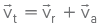
4
Marcos e João partem de um mesmo ponto e caminham através de trajetórias retilíneas que fazem entre si um ângulo de 60°. Sabendo que Marcos caminha a uma velocidade de 5 km/h e João a 8 km/h, qual será a distância entre eles após duas horas de caminhada?
5
Um banhista em risco de afogamento é avistado por salva-vidas de dois postos, A e B, que estão a uma distância de 150 metros entre si. O salva-vidas do posto A observa um ângulo de 45° entre o posto B e o banhista. Do posto B, outro salva-vidas observa um ângulo de 15° entre o posto A e o banhista. Sabendo que sen 120°
6
Dado o triângulo ABC, com medidas dos lados conforme apontadas na figura, determine o comprimento x da altura relativa ao lado BC.

7
Dada a figura a seguir, determine o perímetro do triângulo ABC.

8
Dado o triângulo ABC, em que AB
Utilizando a aproximação , calcule a largura aproximada do rio obtida pelo nadador.
- o cosseno do ângulo

- o comprimento do segmento
 , em que M é o ponto médio de
, em que M é o ponto médio de  .
.
9
Um biólogo deseja calcular a altura de uma árvore que se encontra na margem oposta de um rio, conforme a figura a seguir.

Inicialmente, a partir do ponto A, o biólogo mede que o ângulo D de elevação do chão ao topo da árvore vale 22°. Em seguida, o biólogo caminha uma distância de 24 metros do ponto A ao ponto B, perpendicularmente ao segmento  , e determina que o ângulo entre a reta que vai de B ao pé da árvore e a que vai do ponto B ao ponto A é de 59°. Utilizando as aproximações tg 22°
, e determina que o ângulo entre a reta que vai de B ao pé da árvore e a que vai do ponto B ao ponto A é de 59°. Utilizando as aproximações tg 22°

Utilizando a aproximação , calcule a largura aproximada do rio obtida pelo nadador.
- o cosseno do ângulo
- o comprimento do segmento , em que M é o ponto médio de .
10
IFPE 2016 Francisco decidiu fazer uma brincadeira com seus filhos. Montou um mapa do tesouro com algumas instruções e disse-lhes que, ao chegar ao ponto final, encontrariam um belo prêmio. As instruções foram:
- ande 200 metros na direção NORTE;
- ande 120 metros na direção LESTE;
- ande 50 metros na direção SUL;
- ande 40 metros na direção OESTE.
Luiz, um de seus filhos, decidiu colocar em prática o que acabara de aprender na escola. Em alguns minutos, ele descobriu qual seria a menor distância entre o ponto de partida e o ponto de chegada mostrado no mapa. Assim sendo, a distância calculada por Luiz foi de
- 170 metros.
- 150 metros.
- 180 metros.
- 200 metros.
- 210 metros.
1
Para cada um dos itens a seguir, determine o valor da medida x.


2
Para cada uma das condições a seguir, determine o valor de sen θ, cos θ e tg θ.


3
Utilizando a lei dos cossenos, determine o valor da medida desconhecida em cada um dos casos a seguir.


4
Determine o valor de x de acordo com a figura a seguir.

5
Quando o ângulo de elevação do Sol é de 60°, um prédio projeta sobre o chão uma sobra de 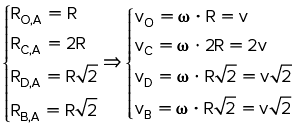 m. Com base nessas informações, determine a altura do prédio.
6
Calcule o perímetro do triângulo retângulo ABC na figura a seguir, sabendo que BC

7
A figura a seguir é composta de quatro triângulos retângulos cujos ângulos agudos medem 45°. Sabendo que OA .
.

8
Dados três triângulos retângulos dispostos como na figura, determine as medidas x,y e z.
9
Observe o triângulo retângulo:

A única opção que apresenta corretamente o valor de k é:
- b ⋅ sen y
- b ⋅ tg y
- a ⋅ cos y
- a ⋅ tg y

10
Determine o cosseno do menor ângulo do triângulo retângulo de lados x, x
11
Tiago observa um balão que sobe verticalmente em relação a um ponto P, no solo, distante 300 metros dele. Em um primeiro instante, ele observa o balão sob um ângulo de 30° em relação ao solo. Passados alguns minutos, o balão passa a ser visto por Tiago a partir de um ângulo de 60°. Determine o deslocamento vertical do balão durante o intervalo de tempo entre as duas observações de Tiago.
12
Enzo, inicialmente no ponto A, observa uma torre de altura  metros de A, de onde é possível observar a mesma torre, mas dessa vez sob um ângulo de 30°. Com o auxílio da figura, calcule a altura h da torre.
metros de A, de onde é possível observar a mesma torre, mas dessa vez sob um ângulo de 30°. Com o auxílio da figura, calcule a altura h da torre.

13
A figura a seguir representa uma escada de comprimento L em duas posições distintas em relaçãoa uma parede. Na primeira situação, a escada faz um ângulo α em relação ao piso e toca a parede em um ponto A, enquanto na segunda situação o ângulo em relação ao piso vale β e a escada alcança o ponto B na parede. Determine, em função de L, α e β, a distância h apontada na figura.

14
De acordo com a figura a seguir, determine a medida do segmento DC

15
Dado um quadrado ABCD de lado 1 m, prolonga-se a diagonal  até um ponto F, de modo que CF
até um ponto F, de modo que CF

- o comprimento do segmento

- o cosseno do ângulo AFB.
16
Cefet-MG 2017 Duas crianças, cada uma em um prédio diferente, brincam com canetas lasers nas janelas de seus apartamentos, apontando para um ponto na quadra situada entre os prédios. A criança do prédio A está a uma altura de 10 m, e a do prédio B, a uma altura de 20 m do chão. A distância entre os prédios é de 50 m. Em um determinado momento, os lasers das crianças atingem, simultaneamente, um ponto P do pátio equidistante das crianças, tal como na ilustração:
A distância x em metros, deste ponto até o prédio B, é

- 22
- 23
- 25
- 28
17
PUC-Campinas 2018 Paulo está deitado na cama e assistindo à TV. Na figura, C representa um ponto sobre a cama a partir do qual o controle remoto da TV foi acionado na direção do receptor de sinal indicado por R. A medida do ângulo entre a linha que representa o sinal transmitido e a cama é igual a α.

Dados:
| α | 11,3° | 11,5° | 12,1° | 12,4° | 78,5° |
|---|---|---|---|---|---|
| sen α | 0,196 | 0,199 | 0,210 | 0,215 | 0,980 |
| cos α | 0,981 | 0,980 | 0,978 | 0,977 | 0,199 |
| tg α | 0,200 | 0,203 | 0,214 | 0,220 | 4,915 |
Sabe-se, ainda, que:
- R está a 1,2 m do chão;
- a altura da cama em relação ao chão é de 40 cm;
- C está a 4 metros de distância da parede em que a TV está fixada;
- a espessura da TV é desprezível.
Nas condições descritas e consultando a tabela, α é igual a
- 78,5°
- 11,5°
- 12,1°
- 12,4°
- 11,3°
18
Unesp A figura representa a vista superior do tampo plano e horizontal de uma mesa de bilhar retangular com caçapas em A, B, C e D. O ponto P, localizado em AB, representa a posição de uma bola de bilhar, sendo PB

Nas condições descritas e adotando  , a largura do tampo da mesa, em metros, é próxima de
, a largura do tampo da mesa, em metros, é próxima de
- 2,42.
- 2,08.
- 2,28.
- 2,00.
- 2,56.
19
Dois amigos decidiram calcular a altura aproximada de um pinheiro. Para isso, posicionaram-se um ao norte e outro a leste do pinheiro, tendo cada um a mesma distância em relação à árvore. Sabendo que a distância d entre os dois amigos é de  metros e que o ângulo de elevação do solo ao topo do pinheiro a partir da posição de cada um deles é de 13°, determine a altura do pinheiro. Nota: caso necessário, utilize tg 13°
metros e que o ângulo de elevação do solo ao topo do pinheiro a partir da posição de cada um deles é de 13°, determine a altura do pinheiro. Nota: caso necessário, utilize tg 13°
20
Unicamp 2017 Considere o triângulo retângulo ABD exibido na figura a seguir, em que AB

- 15°.
- 30°.
- 45°.
- 60°.
21
Um motorista dirige seu carro em uma estrada retilínea passando sucessivamente pelos pontos A, B, C. Ao passar pelo ponto A, o motorista observa uma torre distante no ponto L, de modo que o ângulo LÂC mede 30°. Após dirigir por 4 km até o ponto B, o motorista enxerga novamente a torre, e o ângulo LB^C mede 75°.

Determine:
- a distância, em quilômetros, entre a torre e o ponto B.
- a distância, em quilômetros, entre a torre e o ponto A.
22
Dado o triângulo ABC, é traçada a altura  . A partir das informações da figura, determine:
. A partir das informações da figura, determine:

- o valor de cos α;
- o comprimento do segmento

- o comprimento do segmento
23
Fuvest-SP No quadrilátero a seguir, BC

A medida, em cm, do perímetro do quadrilátero é:
- 11
- 12
- 13
- 14
- 15
24
ITA 2016 Seja ABC um triângulo equilátero e suponha que M e N são pontos pertencentes ao lado  tal que BM
tal que BM


25
Com base nas informações da figura a seguir, determine o valor da tangente do ângulo . Utilize, caso necessário, a relação  .
.

26
Dado o triângulo representado na figura, determine os valores das variáveis x e y apontadas.

27
Um fazendeiro separou uma parte do seu terreno para que fosse vendida. A figura a seguir representa as medidas feitas por um agrimensor para o terreno que será posto à venda:

A partir das medidas estabelecidas, determine o comprimento da cerca necessário para circundar completamente o terreno dado pelo triângulo ABC. Caso necessário, utilize as aproximações  e
e 
28
Na figura a seguir, determine o comprimento x do segmento  em função das medidas de α e β.
em função das medidas de α e β.

29
Um ponto P está disposto no interior do quadrado ABCD de lado 2 m, de modo que a distância de P ao ponto A é de 2 m e ao ponto médio de  é de 1 m. Determine a distância de P ao ponto D.
é de 1 m. Determine a distância de P ao ponto D.
Um cavalo pasta em um cercado quadrado ABCD, enquanto um fazendeiro o observa do vértice D desse quadrado. Se o cavalo está a 5 metros do ponto A,  metros do ponto B e
metros do ponto B e  metros do ponto C, determine a distância
metros do ponto C, determine a distância

1
Enem Uma criança deseja criar triângulos utilizando palitos de fósforo de mesmo comprimento. Cada triângulo será construído com exatamente 17 palitos, e pelo menos um dos lados do triângulo deve ter o comprimento de exatamente 6 palitos. A figura ilustra um triângulo construído com essas características.

A quantidade máxima de triângulos não congruentes dois a dois que podem ser construídos é
- 3.
- 5.
- 6.
- 8.
- 10.
2
Enem A rampa de um hospital tem, na sua parte mais elevada, uma altura de 2,2 metros. Um paciente, ao caminhar sobre a rampa, percebe que se deslocou 3,2 metros e alcançou uma altura de 0,8 metro.
A distância em metros que o paciente ainda deve caminhar para atingir o ponto mais alto da rampa é
- 1,16 metro.
- 3,0 metros.
- 5,4 metros.
- 5,6 metros.
- 7,04 metros.
3
Enem A sombra de uma pessoa que tem 1,80 m de altura mede 60 cm. No mesmo momento, a seu lado, a sombra projetada de um poste mede 2,00 m. Se, mais tarde, a sombra do poste diminuiu 50 cm, a sombra da pessoa passou a medir:
- 30 cm.
- 45 cm.
- 50 cm.
- 80 cm.
- 90 cm.
4
Enem O dono de um sítio pretende colocar uma haste de sustentação para melhor firmar dois postes de comprimentos iguais a 6 m e 4 m. A figura representa a situação real na qual os postes são descritos pelos segmentos AC e BD e a haste é representada pelo EF, todos perpendiculares ao solo, que é indicado pelo segmento de reta AB. Os segmentos AD e BC representam cabos de aço que serão instalados.

Qual deve ser o valor do comprimento da haste EF?
- 1 m
- 2 m
- 2,4 m
- 3 m

5
Unesp 2016 Uma mesa de passar roupa possui pernas articuladas  , conforme indica a figura. Sabe-se que AB
, conforme indica a figura. Sabe-se que AB . Quando a mesa está armada, o tampo fica paralelo ao plano do chão, e a medida do ângulo
. Quando a mesa está armada, o tampo fica paralelo ao plano do chão, e a medida do ângulo  é 60°.
é 60°.

Considerando-se desprezíveis as medidas dos pés e da espessura do tampo e adotando  , a altura do tampo dessa mesa armada em relação ao plano do chão, em centímetros, está entre
, a altura do tampo dessa mesa armada em relação ao plano do chão, em centímetros, está entre
- 96 e 99.
- 84 e 87.
- 80 e 83.
- 92 e 95.
- 88 e 91.
6
Enem 2018 Os guindastes são fundamentais em canteiros de obras, no manejo de materiais pesados, como vigas de aço. A figura ilustra uma sequência de estágios em que um guindaste iça uma viga de aço que se encontra inicialmente no solo.

Na figura, o ponto O representa a projeção ortogonal do cabo de aço sobre o plano do chão, e esse se mantém na vertical durante todo o movimento de içamento da viga, que se inicia no tempo t
O gráfico que descreve a distância do ponto M ao ponto O, em função do tempo, entre t